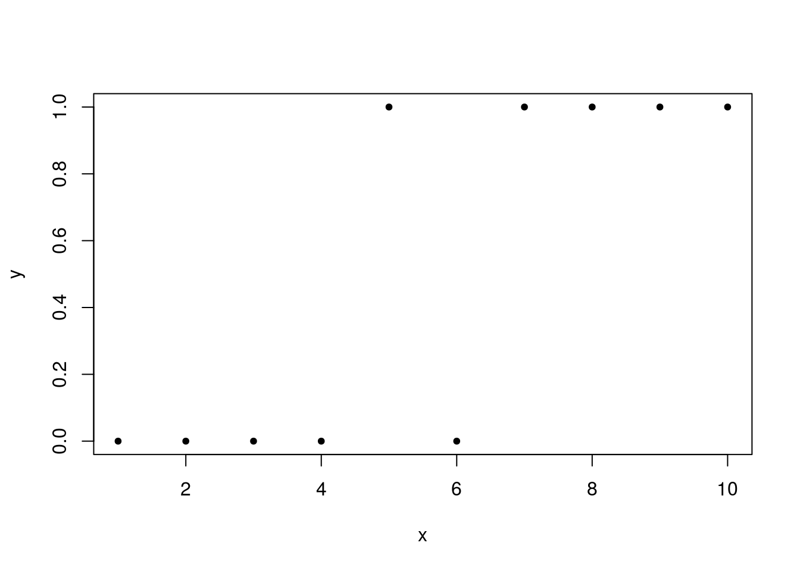
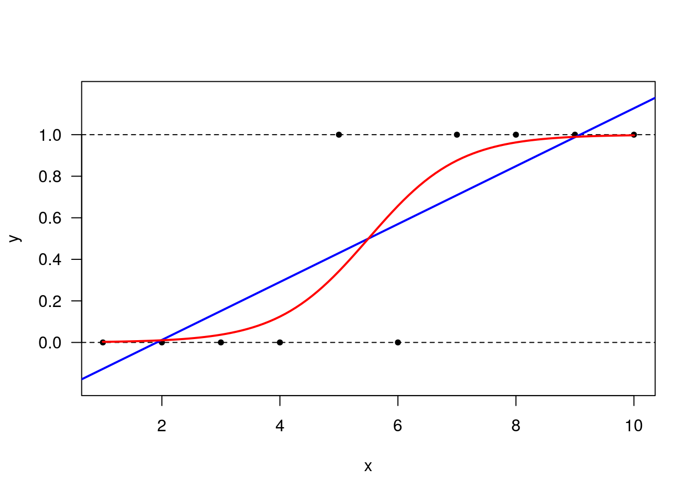

Ajuste de um GLM: Distribuição de Bernoulli
y <- c(0,0,0,0,1,0,1,1,1,1) # valores para a variável resposta.
x <- 1:10 # valores para a variável explicativa.
plot(x, y, pch=20)
Matriz do modelo
mu <- c(0.1,0.1,0.1,0.1,0.9,0.1,0.9,0.9,0.9,0.9)
# Chute inicial
z <- log(mu/(1-mu)) + (y-mu)/(mu*(1-mu))
z## [1] -3.308336 -3.308336 -3.308336 -3.308336 3.308336 -3.308336 3.308336
## [8] 3.308336 3.308336 3.308336## [1] 0.09 0.09 0.09 0.09 0.09 0.09 0.09 0.09 0.09 0.09Pesos
## (Intercept) x
## -5.0727814 0.9223239## [,1]
## [1,] -4.1504575
## [2,] -3.2281336
## [3,] -2.3058097
## [4,] -1.3834858
## [5,] -0.4611619
## [6,] 0.4611619
## [7,] 1.3834858
## [8,] 2.3058097
## [9,] 3.2281336
## [10,] 4.1504575## [,1]
## [1,] 0.01551277
## [2,] 0.03812062
## [3,] 0.09064294
## [4,] 0.20044974
## [5,] 0.38671021
## [6,] 0.61328979
## [7,] 0.79955026
## [8,] 0.90935706
## [9,] 0.96187938
## [10,] 0.98448723mu para o próximo passo.
Atualizamos os valores de z e w com os resultados do passo 1
## [,1]
## [1,] -5.166215
## [2,] -4.267765
## [3,] -3.405488
## [4,] -2.634189
## [5,] 2.124754
## [6,] -2.124754
## [7,] 2.634189
## [8,] 3.405488
## [9,] 4.267765
## [10,] 5.166215Variável dependente ajustada
## [,1]
## [1,] 0.01527212
## [2,] 0.03666744
## [3,] 0.08242680
## [4,] 0.16026964
## [5,] 0.23716542
## [6,] 0.23716542
## [7,] 0.16026964
## [8,] 0.08242680
## [9,] 0.03666744
## [10,] 0.01527212Pesos
## (Intercept) x
## -6.449377 1.172614betas para o próximo passo.
## [,1]
## [1,] -5.276763
## [2,] -4.104149
## [3,] -2.931535
## [4,] -1.758921
## [5,] -0.586307
## [6,] 0.586307
## [7,] 1.758921
## [8,] 2.931535
## [9,] 4.104149
## [10,] 5.276763preditor linear para o próximo passo.
## [,1]
## [1,] 0.005082975
## [2,] 0.016236101
## [3,] 0.050616520
## [4,] 0.146925543
## [5,] 0.357482657
## [6,] 0.642517343
## [7,] 0.853074457
## [8,] 0.949383480
## [9,] 0.983763899
## [10,] 0.994917025Mu para o próximo passo
Atualizamos os valores de z e w com os resultados do passo 2
## [,1]
## [1,] -6.281872
## [2,] -5.120653
## [3,] -3.984850
## [4,] -2.931152
## [5,] 2.211032
## [6,] -2.211032
## [7,] 2.931152
## [8,] 3.984850
## [9,] 5.120653
## [10,] 6.281872Variável dependente ajustada
## [,1]
## [1,] 0.005057138
## [2,] 0.015972490
## [3,] 0.048054488
## [4,] 0.125338428
## [5,] 0.229688807
## [6,] 0.229688807
## [7,] 0.125338428
## [8,] 0.048054488
## [9,] 0.015972490
## [10,] 0.005057138Pesos
## (Intercept) x
## -7.067324 1.284968betas para o próximo passo.
## [,1]
## [1,] -5.782356
## [2,] -4.497388
## [3,] -3.212420
## [4,] -1.927452
## [5,] -0.642484
## [6,] 0.642484
## [7,] 1.927452
## [8,] 3.212420
## [9,] 4.497388
## [10,] 5.782356preditor linear para o próximo passo.
## [,1]
## [1,] 0.00307198
## [2,] 0.01101536
## [3,] 0.03870100
## [4,] 0.12703286
## [5,] 0.34468524
## [6,] 0.65531476
## [7,] 0.87296714
## [8,] 0.96129900
## [9,] 0.98898464
## [10,] 0.99692802mu para o próximo passo.
Atualizamos os valores de z e w com os resultados do passo 3
## [,1]
## [1,] -6.785438
## [2,] -5.508526
## [3,] -4.252679
## [4,] -3.072971
## [5,] 2.258714
## [6,] -2.258714
## [7,] 3.072971
## [8,] 4.252679
## [9,] 5.508526
## [10,] 6.785438Variável dependente ajustada
## [,1]
## [1,] 0.003062543
## [2,] 0.010894021
## [3,] 0.037203229
## [4,] 0.110895515
## [5,] 0.225877324
## [6,] 0.225877324
## [7,] 0.110895515
## [8,] 0.037203229
## [9,] 0.010894021
## [10,] 0.003062543Pesos
## (Intercept) x
## -7.157411 1.301348betas para o próximo passo.
## [,1]
## [1,] -5.8560638
## [2,] -4.5547163
## [3,] -3.2533688
## [4,] -1.9520213
## [5,] -0.6506738
## [6,] 0.6506738
## [7,] 1.9520213
## [8,] 3.2533688
## [9,] 4.5547163
## [10,] 5.8560638preditor linear para o próximo passo.
## [,1]
## [1,] 0.002854318
## [2,] 0.010408017
## [3,] 0.037206023
## [4,] 0.124333126
## [5,] 0.342837724
## [6,] 0.657162276
## [7,] 0.875666874
## [8,] 0.962793977
## [9,] 0.989591983
## [10,] 0.997145682mu para o próximo passo. Agora repetimos esse passo atualizando o valor de mu.
Agora, vamos repetir o processo para 10 passos
Matriz que vai armazenar as estimativas.
Vetor que vai armazenar as diferenças entre os resultados de simulações sucessivas.
for(i in 1:10){
if(i==1) {mu <- c(0.1,0.1,0.1,0.1,0.9,0.1,0.9,0.9,0.9,0.9)
# Se for a primeira iteração, então usamos nossos chutes iniciais.
eta <- log(mu/(1-mu))}
if (i!=1) {
eta <- X %*% beta[i-1,]
mu <- exp(eta)/(exp(eta)+1)
}
z <- log(mu/(1-mu)) + (y-mu)/(mu*(1-mu))
w <- (mu*(1-mu))
beta[i,] <- lm(z ~ x, weights = w)$coefficients
if(i>1) epsilon[i-1] <- sum(((beta[i,]-beta[i-1,])/beta[i-1,])**2)
}Agora, vamos ajustar o modelo declarando a log-verossimilhança a um otimizador do R.
## Loading required package: bbmle## Loading required package: stats4logvero armazena a função de log verossimilhança (-)
Precisamos de valores iniciais para beta0 e beta1. Vamos chutar valores iniciais para mu e fazer uma regressão linear simples de ln(mu/(1-mu)) ~ x
mu <- c(0.1,0.1,0.1,0.1,0.9,0.1,0.9,0.9,0.9,0.9)
ajuste <- lm(log((mu)/(1-mu)) ~ x)
# Regressando g(mu) em função de x para obter valores iniciais para b0 e b1.
est2 <- mle2(logvero,start=list(b0=-3.23, b1=0.13))
est2##
## Call:
## mle2(minuslogl = logvero, start = list(b0 = -3.23, b1 = 0.13))
##
## Coefficients:
## b0 b1
## -7.159287 1.301686
##
## Log-likelihood: -2.51logvero2 <- function(b0, b1,data){
l <- sum(dbinom(data$y, 1, exp(b0 + b1 * data$x)/ (1+exp(b0 + b1 * data$x)), log=T))
return(l)
}
data <- data.frame(x,y)
f <- Vectorize(logvero2,vectorize.args=c("b0","b1"))
b0 <- seq(-15, 0, length.out = 50)
b1 <- seq(0.5, 2.5, length.out = 50)
z <- outer(b0, b1, FUN = f, data)
zlim <- range(z[!is.na(z)])
palette <- rev(rainbow(20))
colors <- palette[19*(z-zlim[1])/diff(zlim) + 1]
require(rgl)## Loading required package: rglFinalmente, usemos a função glm.
## [1] "coefficients" "residuals" "fitted.values"
## [4] "effects" "R" "rank"
## [7] "qr" "family" "linear.predictors"
## [10] "deviance" "aic" "null.deviance"
## [13] "iter" "weights" "prior.weights"
## [16] "df.residual" "df.null" "y"
## [19] "converged" "boundary" "model"
## [22] "call" "formula" "terms"
## [25] "data" "offset" "control"
## [28] "method" "contrasts" "xlevels"## (Intercept) x
## -7.159011 1.301638Estimativas dos coeficientes do modelo.
## 1 2 3 4 5 6
## 0.002850596 0.010397540 0.037179991 0.124285645 0.342804967 0.657195033
## 7 8 9 10
## 0.875714355 0.962820009 0.989602460 0.997149404Probabilidades ajustadas pelo modelo para cada valor de x na amostra.
## 1 2 3
## -2.603277 0.000000 2.603277Estimativas (na escala do preditor) para x=3.5; x=5.5 e x=7.5.
## 1 2 3
## 0.06892784 0.50000000 0.93107216Estimativas (na escala da resposta - probabilidades estimadas) para x=3.5; x=5.5 e x=7.5.
##
## Call:
## glm(formula = y ~ x, family = binomial(link = "logit"))
##
## Deviance Residuals:
## Min 1Q Median 3Q Max
## -1.4633 -0.2426 0.0000 0.2426 1.4633
##
## Coefficients:
## Estimate Std. Error z value Pr(>|z|)
## (Intercept) -7.159 4.759 -1.504 0.133
## x 1.302 0.840 1.550 0.121
##
## (Dispersion parameter for binomial family taken to be 1)
##
## Null deviance: 13.863 on 9 degrees of freedom
## Residual deviance: 5.018 on 8 degrees of freedom
## AIC: 9.018
##
## Number of Fisher Scoring iterations: 6Resumo do modelo ajustado contendo, dentre outras coisas, as estimativas dos betas e os correspondnetes erros padrões.
## (Intercept) x
## (Intercept) 22.648750 -3.8806414
## x -3.880641 0.7055712Matriz de variâncias e covariâncias estimada para \(\hat{\beta}\)
Vamos acrescentar ao gráfico o modelo ajustado. Antes, começamos tentando o ajuste de um modelo linear.
plot(x, y, pch=20, ylim = c(-0.2, 1.2), yaxt = 'n')
axis(2, seq(0, 1, 0.2), las = 1)
abline(h = 0, lty = 2)
abline(h = 1, lty = 2)
ajuste_lin <- lm(y ~ x)
abline(coefficients(ajuste_lin), col='blue', lwd = 2)
# Agora para o glm:
x.grid <- seq(1, 10, length.out = 100)
lines(x.grid, predict(ajuste, newdata = data.frame(x = x.grid),
type = 'response'), col = 'red', lwd = 2)